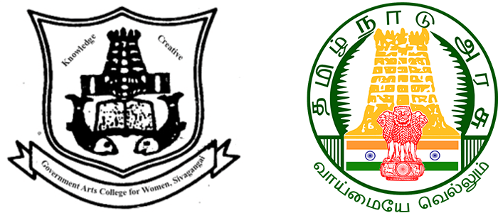

UPCOMING COLLEGE EVENTS
Don't Miss any of your important evens. Here are the important events your have registered for!
Principal of Government Arts College for Women, Sivagangai. It was established in the year 1998.
The college is affiliated with Alagappa University. This college offers different cpirses on arts, commerce and
science. Government of Tamil Nadu has identified Sivagangai as one of the remote packets of educationally
backward sector and started a Women's Arts College to empower the Women folk to elevate the standard of life
by giving opportunity to get higher education.

Software Development Event
Free Entry|Free Food
Software development design is a critical phase in the software development lifecycle, where the blueprint for
a software system is meticulously crafted. This phase involves making important decisions about the architecture,
structure,and functionality of the software.


Free Entry|Free Food
Software development design is the foundational stage where the vision for
a software project is translated into a concrete plan. It sets the direction for
the entire development process and significantly influences the success and
quality of the final product.
Contact
04575-243881,04575-245925|gacwsvga@yahoo.com
Government Arts College for Women,
Near Collectorate Complex, Kanjirangal
Sivaganga District, Tamil Nadu,
India-630 562.